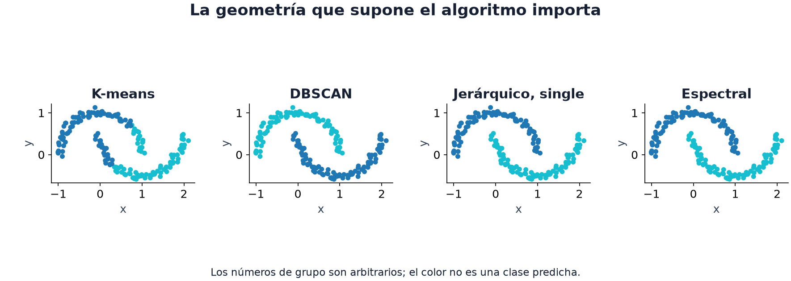

08 · Sin etiquetas
Nivel 1 — El piso · Ruta de Aprendizaje
Hasta aquí una etiqueta nos decía qué respuesta aprender. ¿Qué podemos hacer cuando muchas filas no tienen respuesta, o cuando buscamos objetos parecidos? Podemos estudiar la estructura de los datos, construir representaciones y usar las etiquetas disponibles para comprobar si esa estructura ayuda.
Distintas formas de trabajar sin una respuesta por fila
Clustering significa agrupar ejemplos a partir de sus características. Reducir dimensión significa representarlos con menos coordenadas. Aprendizaje semisupervisado combina ejemplos con y sin etiqueta. Son ideas distintas; encontrar grupos no equivale a descubrir las clases de una tarea.
| Tarea | Qué te daban |
|---|---|
| Antique Painting Authentication (2025) | 500 filas, muchas con etiqueta desconocida |
| Restroom Icon Matching (2025) | 82 baños de entrenamiento para aprender a emparejar iconos |
| Potato (2026) | embeddings y un juez que compara palabras |
Los modelos de los módulos 06 y 07 siguen siendo baselines útiles cuando hay etiquetas. Las técnicas de este capítulo amplían qué información pueden usar.
K-means: encontrar grupos
Imagina puntos dibujados sobre un mapa y k marcas que los resumen. K-means
asigna cada punto a la marca más cercana, mueve cada marca al promedio de su
grupo y repite. Esas marcas son los centros. El objetivo es reducir la suma
de distancias cuadradas de los puntos a sus centros.

En la figura, K-means corta las lunas para formar grupos cercanos a sus centros. DBSCAN conecta zonas con suficientes vecinos; el jerárquico con enlace simple une grupos por sus puntos más cercanos; el espectral trabaja con una red de vecindades. Los últimos tres siguen las lunas con estas configuraciones, pero otras densidades, ruido o parámetros pueden cambiar el resultado. Los colores son nombres de grupos: que azul y turquesa se intercambien no cambia la partición.
El fragmento siguiente solicita tres grupos en una matriz X de ejemplos y
columnas; la figura usa dos. La inicialización k-means++ distribuye los centros
iniciales para evitar concentrarlos en una sola zona; la receta está en K-means.
# bloque: fragmento
from sklearn.cluster import KMeans
from sklearn.preprocessing import StandardScaler
from sklearn.pipeline import make_pipeline
modelo = make_pipeline(StandardScaler(), KMeans(n_clusters=3, n_init=10,
random_state=0))
etiquetas = modelo.fit_predict(X)Hay tres decisiones detrás de una llamada tan corta:
- La distancia depende de las unidades. Expresar una columna en centímetros
en vez de metros multiplica su influencia sobre la distancia.
StandardScalerresta la media y divide por la desviación para dar escalas comparables. Tiene sentido si las unidades son arbitrarias; también puede borrar diferencias de escala relevantes. Escalar es una elección sobre qué significa «cerca». - K-means favorece grupos compactos alrededor de centros. No comprueba que los datos provengan de esferas. Su objetivo puede cortar un grupo alargado o juntar partes de grupos desiguales, como ocurre con las lunas de la figura.
- El número de grupo no es una clase. El grupo 0 puede pasar a llamarse 2
en otra corrida. Para comparar particiones se puede usar el índice de Rand
ajustado (
adjusted_rand_score), que no depende de esos nombres.
También podemos usar K-means para construir features: cada punto obtiene k
columnas con sus distancias a los centros. Un clasificador del módulo 07 puede
aprender si esas distancias aportan señal. En una evaluación de datos nuevos,
los centros se ajustan con train y se conservan al transformar validación.
PCA: conservar variación en menos direcciones
Piensa en una nube de puntos alargada en diagonal. Guardar la posición a lo largo de esa diagonal conserva buena parte de su forma usando un solo número. PCA busca esas direcciones de mayor variación, llamadas componentes principales, y proyecta los datos sobre ellas. Proyectar es obtener las coordenadas del punto en las direcciones elegidas. La receta está en PCA.
Comprimir. Pasar de 2560 coordenadas a 50 reduce el tamaño de la tabla y puede abaratar el modelo siguiente. La variación conservada no es lo mismo que información útil para predecir: una diferencia pequeña podría separar las clases. Reducir dimensión puede ayudar o perjudicar la generalización.
Ver. Una proyección a dos dimensiones permite explorar tendencias. Si allí las clases se mezclan, podrían separarse en una dirección que el dibujo omitió. Si se separan, todavía falta comprobar el resultado en datos reservados.
Examinar reconstrucciones. Podemos volver de las coordenadas reducidas al
espacio original. Una diferencia grande indica que el punto se aparta de las
direcciones conservadas. Este fragmento usa la receta y supone que X permite
conservar diez componentes:
# bloque: fragmento
proyeccion, componentes, media = pca(X, n_componentes=10)
reconstruido = reconstruir(proyeccion, componentes, media)
error = ((X - reconstruido) ** 2).mean(axis=1) # uno por muestra
sospechosos = error.argsort()[-10:] # mayor error de reconstrucciónUn error alto puede corresponder a una anomalía, a un ejemplo válido poco frecuente o a una señal que decidimos descartar. El patrón estructural descrito en Antique Painting Authentication motiva explorar PCA, sin asegurar qué significa cada reconstrucción difícil.
PCA centra los datos: resta la media para estudiar variación alrededor de ella. Estandarizar además cambia qué variaciones dominan, por la misma razón que en K-means. Una componente y su opuesta describen el mismo eje; invertir su signo también invierte sus coordenadas, sin cambiar la reconstrucción. Conservar el transformador ajustado evita mezclar sistemas de coordenadas entre splits.
Para visualizar, t-SNE y UMAP pueden revelar vecindarios que una proyección lineal no muestra. Un gráfico atractivo no demuestra clases separables ni conserva necesariamente distancias globales.
Hay una diferencia operativa: sklearn.manifold.TSNE no ofrece transform
para muestras nuevas; UMAP sí. Puedes ajustar UMAP con train, transformar
validación y usar sus componentes en un clasificador. Evalúa si mejora frente
a PCA o a no reducir, con el transformador dentro del pipeline y sin ajustar
con test. Ejemplo oficial de UMAP.
Aprovechar los datos sin etiqueta: self-training
Imagina 40 filas etiquetadas y 560 sin etiquetar. Self-training entrena con las 40 y predice clases para las otras. Algunas predicciones se incorporan como pseudo-etiquetas: respuestas propuestas por el propio modelo, no observadas. Después se reentrena con el conjunto ampliado. La receta está en Self-training.
La confianza del modelo suele ser una probabilidad estimada. Un 0.95 no asegura que acierte el 95% de esas predicciones: eso depende de su calibración y de si las filas nuevas se parecen a las etiquetadas. Un modelo seguro pero equivocado puede reforzar su propio error.
El umbral de aceptación y el número de rondas controlan cuánta señal incierta se incorpora. Un umbral alto acepta menos ejemplos, pero no convierte los aceptados en verdad. Una validación con etiquetas observadas, reservada antes de este proceso, permite comparar contra el modelo supervisado inicial. Los datos sin etiqueta también pueden no aportar ninguna mejora.
Emparejar por similitud: la forma de tarea escondida
En una búsqueda tenemos consultas y un catálogo de candidatos. Un embedding representa cada objeto mediante un vector. Si elegimos comparar su dirección con coseno, normalizamos cada vector dividiéndolo por su longitud: la raíz de la suma de sus coordenadas al cuadrado. Así queda con longitud 1. El vector cero no tiene dirección; conviene detectarlo antes de interpretar una similitud. La receta está en Búsqueda por similitud coseno.
# bloque: fragmento
Q = normalizar_filas(consultas)
C = normalizar_filas(catalogo)
mejor = (Q @ C.T).argmax(axis=1) # para cada consulta, su parejaSi Q tiene forma (n_consultas, d) y C tiene (n_candidatos, d), el producto
contiene una puntuación por pareja: (n_consultas, n_candidatos). argmax
escoge el candidato con mayor puntuación en cada fila. No impone que cada
candidato se use una sola vez ni comprueba que exista una pareja válida.
Esta operación puede ser parte de una solución de Restroom Icon Matching; todavía hay que construir una representación adecuada de los iconos y respetar su contrato de emparejamiento. En Potato, la similitud ayuda a proponer palabras, pero las decisiones dependen también del historial y del juez.
El coseno ignora la longitud del vector. La distancia euclidiana compara sus coordenadas y conserva ese efecto. Ninguna es correcta para todos los embeddings: importa cómo se entrenó la representación y qué parecido necesita la tarea. Sobre vectores normalizados, ambas ordenan los vecinos de la misma manera; sin normalizar pueden elegir vecinos distintos.
⚠️ Las tres trampas
1. Confundir selección y evaluación final. Elegir k con una validación
etiquetada es válido si el objetivo es mejorar una tarea supervisada. Significa
que esas etiquetas participaron en la selección. Hace falta otro conjunto
reservado para estimar el resultado final sin reutilizar esa decisión.
2. Comparar nombres de clusters como si fueran clases. La accuracy directa puede dar cero a una partición correcta cuyos nombres estén intercambiados. ARI o NMI comparan particiones sin ese problema. Si asignas clases a clusters para predecir, aprende esa correspondencia con etiquetas de entrenamiento, sin usar las respuestas del conjunto que vas a evaluar.
3. Ajustar una representación con datos reservados sin explicitarlo. En el
escenario del módulo 05, PCA se ajusta con train y transforma lo demás dentro de
un Pipeline. Algunas tareas permiten aprender también de entradas de test:
es un protocolo distinto, que debe estar autorizado y reflejarse en la
validación. «No usa etiquetas» no significa «no aprende de esos datos».
🏋️ Práctica
| # | Ejercicio | Fuente | Qué practica |
|---|---|---|---|
| 1 | Clustering y PCA | Kaggle Learn — Feature Engineering | K-means como feature |
| 2 | MNIST: PCA a 2-D y grafica por dígito. Después t-SNE y compara | Kaggle | ver para qué sirve cada uno |
| 3 | ⭐ Antique Painting Authentication: supervisado solo vs. + self-training | repo oficial | cuándo aportan las filas sin etiqueta |
| 4 | ⭐ Restroom Icon Matching: emparejamiento por coseno sobre features simples | repo oficial | comparar representaciones para emparejar |
| 5 | Detección de anomalías con error de reconstrucción de PCA | PCA | interpretar qué información se descarta |
El ejercicio 4 permite explorar un caso con baseline bruto alto: 0.77. En la tabla publicada el 86% obtuvo cero normalizado; ese dato no distingue un envío por debajo del baseline de un fallo o de no haber enviado.
🎯 Mini-desafío (formato IOAI)
Tarea: Antique Painting Authentication (IOAI 2025), ahora usando las muestras sin etiqueta. Métrica local: accuracy sobre un split estratificado fijo de las filas etiquetadas, reservado antes del pseudo-etiquetado. Una posibilidad es 20% de validación con semilla 0, siempre que haya suficientes filas de cada clase para representarlas a ambos lados. Con muy pocas etiquetas, la incertidumbre de esa evaluación forma parte del resultado. Baseline local: tu modelo supervisado (a), recalculado en ese split. Los valores oficiales 0.46 y 0.98 pertenecen a su evaluación original; no son umbrales directamente comparables con esta validación.
Compara tres alternativas con la misma validación: (a) un modelo supervisado de las familias estudiadas en 06, entrenado aquí solo con las filas etiquetadas, (b) self-training, (c) features de PCA o de K-means agregadas al modelo supervisado.
Compara cuánto aportaron las muestras sin etiqueta y qué ejemplos cambiaron de predicción. Una mejora nula también ayuda a entender la estructura del problema.
Para explorar
Mira las mismas muestras con PCA, clustering y un clasificador supervisado. ¿Qué estructura aparece sin etiquetas, y cuál solo ves después de colorear por clase?
En un conjunto donde conozcas las respuestas, oculta una parte de las etiquetas solo para el experimento y genera pseudo-etiquetas. Después recupera las respuestas: ¿en qué ejemplos se equivocó el modelo con mayor confianza?
← 07 - Ensambles y gradient boosting · Ruta de Aprendizaje · 09 - Tensores y PyTorch →